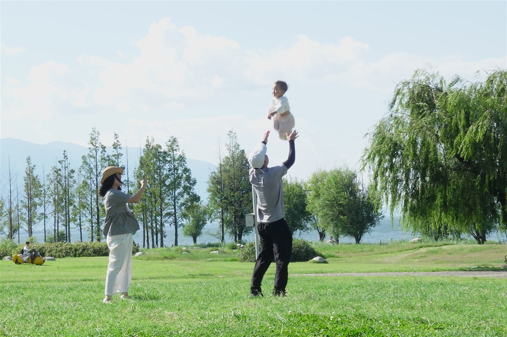

01
The Highest Point
Erhai Lake, Yunnan · July 2026
I framed the father and the child first. Then I saw the mother, already photographing them from the side — so all three had to be in the frame. They were waiting for the second the child reached the top. I was waiting for the second their happiness could be caught.
原本只截住了父亲和孩子，随后发现母亲已经在拍他们，那当然一个都不能少。他们在等孩子飞高的那一秒，我也在等他们最幸福的时刻被我捕捉的那一瞬间。